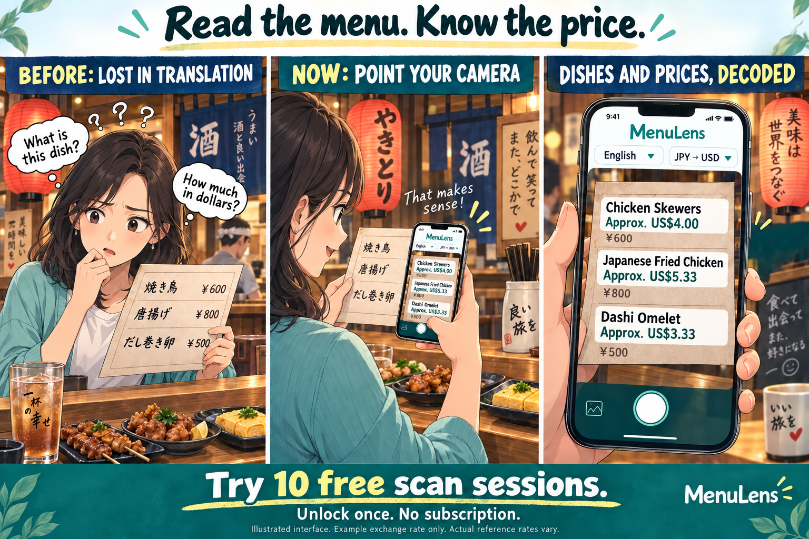
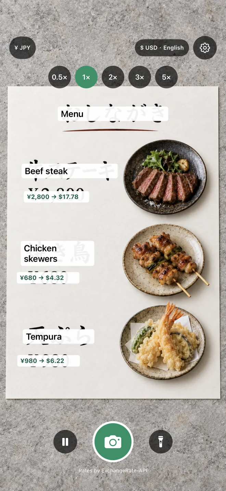
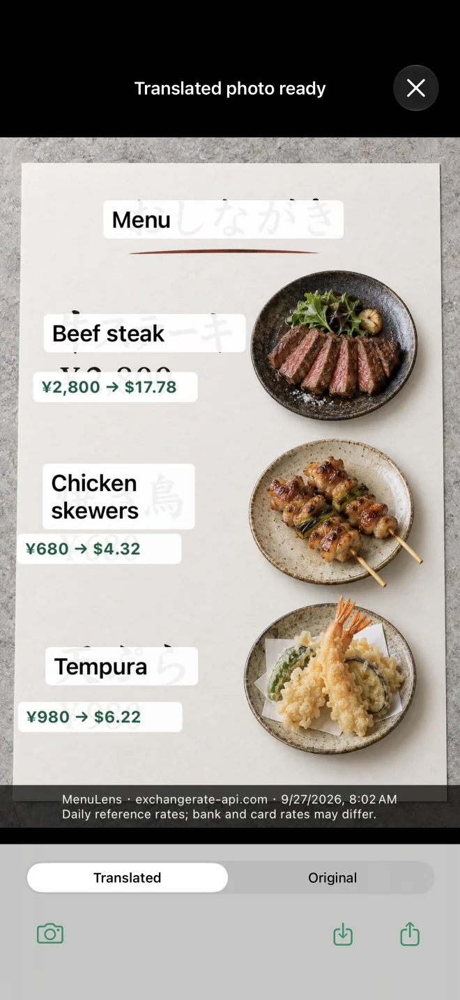
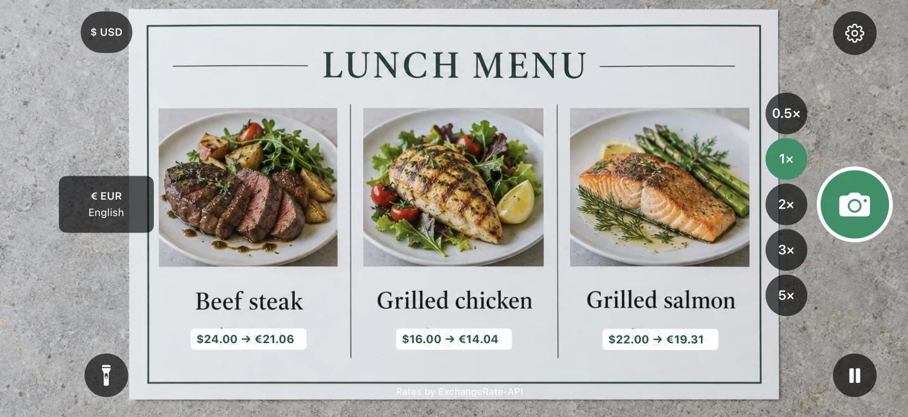
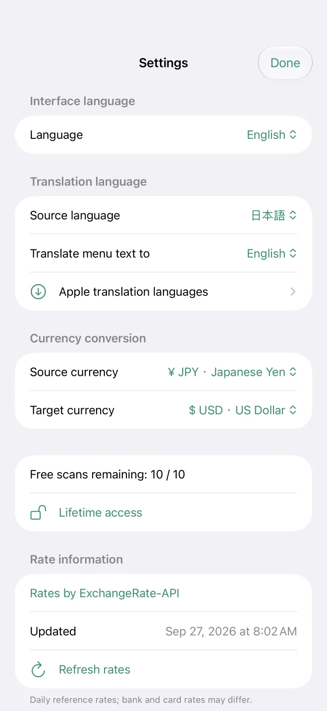

From puzzled to ready to order

- ChooseSet your translation language and currencies.
- ScanRead translated text and estimated prices.
- Keep or shareCapture the result for later or send it to a friend.
iPhone App · Version 2.1 available on the App Store
The big update in 2.1
Found something abroad? Capture the product and shelf price. See what it costs in your currency, then check shopping information found by Google Lens without leaving MenuLens. Fewer app switches; the buying decision stays yours.
Try shopping comparisonMenu translation and currency conversion are still one tap away.
Choose Menu or Shopping when you open the app. Menu mode translates text, converts prices and lets you save or share the captured result.
10 free scan sessions · Optional lifetime unlock · iOS 18 or later
Point at a menu, price tag or sign to see translations in your chosen language and converted prices. Compare the original and translated photo, save it or share it. Menu images are not sent to an external AI service.
Photograph a product and shelf tag to convert the in-store price first. After your initial consent, the app removes original location and capture metadata before sending the photo to Google Lens. Google-branded results remain inside the app.
Google results may show the wrong product or size, an outdated price or an unavailable seller. MenuLens cannot guarantee a match; open the retailer listing to check before buying. Comparison requires internet access.
These sample screenshots show Menu mode. Translations and converted amounts vary with language settings and exchange-rate data; Google results in Shopping mode vary by product and region.





Choose interface language, translation language and currencies separately. The interface supports Traditional Chinese, English, Japanese, Korean, French, Italian and German.
Tap to focus, adjust zoom and view translations and prices over the camera image. Light and dark appearance supported.
Daily reference data from ExchangeRate-API, with the provider timestamp in settings. Saved rates remain available offline, with a warning for older data.
Try 10 free scan sessions. Lifetime access has a US base price of US$4.99 and supports Family Sharing. No subscription. Your local Apple purchase sheet shows the actual price.
Results depend on text clarity and supported Apple languages. Translation may require downloading language models. Converted amounts are estimates and may differ from merchant or payment-provider rates.